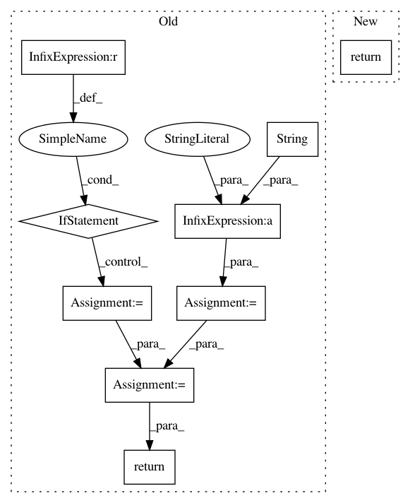

e3bb08cddb924c5bfa747d67dfc187cc13c78879,pynets/plotting.py,,plot_conn_mat,#Any#Any#Any#Any#Any#Any#Any#Any#,11
Before Change
import matplotlib.pyplot as plt
////Set title for adj. matrix based on connectivity model used
if conn_model == "corr":
atlast_graph_title = str(atlas_select) + "_Correlation_Graph"
elif conn_model == "partcorr":
atlast_graph_title = str(atlas_select) + "_Partial_Correlation_Graph"
elif conn_model == "sps":
atlast_graph_title = str(atlas_select) + "_Sparse_Covariance_Graph"
elif conn_model == "cov":
atlast_graph_title = str(atlas_select) + "_Covariance_Graph"
if mask != None:
atlast_graph_title = str(atlast_graph_title) + "_With_Masked_Nodes"
if mask != None:
if network != "None":
atlast_graph_title = str(atlast_graph_title) + "_" + str(network)
out_path_fig=dir_path + "/" + str(ID) + "_" + atlas_select + "_" + str(network) + "_" + str(os.path.basename(mask).split(".")[0]) + "_adj_mat_" + str(conn_model) + "_network.png"
else:
out_path_fig=dir_path + "/" + str(ID) + "_" + atlas_select + "_" + str(os.path.basename(mask).split(".")[0]) + "_adj_mat_" + str(conn_model) + ".png"
else:
if network != "None":
atlast_graph_title = str(atlast_graph_title) + "_" + str(network)
out_path_fig=dir_path + "/" + str(ID) + "_" + atlas_select + "_" + str(network) + "_adj_mat_" + str(conn_model) + "_network.png"
else:
out_path_fig=dir_path + "/" + str(ID) + "_" + atlas_select + "_adj_mat_" + str(conn_model) + ".png"
rois_num=conn_matrix.shape[0]
plt.figure(figsize=(10, 10))
[z_min, z_max] = -np.abs(conn_matrix).max(), np.abs(conn_matrix).max()
plt.imshow(conn_matrix, interpolation="nearest", vmax=z_max, vmin=z_min, cmap=plt.cm.RdBu_r)
////And display the labels
if rois_num < 50:
if all(isinstance(item, int) for item in label_names)==False:
plt.xticks(range(len(label_names)), label_names, size="x-small", rotation=90)
plt.yticks(range(len(label_names)), label_names, size="x-small")
else:
plt.xticks(range(rois_num), rotation=90)
plt.yticks(range(rois_num))
plt.title(atlast_graph_title)
plt.grid(False)
plt.savefig(out_path_fig)
plt.close()
return(atlast_graph_title)
def plot_connectogram(conn_matrix, conn_model, atlas_select, dir_path, ID, network, label_names):
import json
from networkx.readwrite import json_graph
After Change
plt.grid(False)
plt.savefig(out_path_fig)
plt.close()
return
def plot_connectogram(conn_matrix, conn_model, atlas_select, dir_path, ID, network, label_names):
import json
from networkx.readwrite import json_graph
In pattern: SUPERPATTERN
Frequency: 3
Non-data size: 9
Instances
Project Name: dPys/PyNets
Commit Name: e3bb08cddb924c5bfa747d67dfc187cc13c78879
Time: 2018-01-07
Author: dpisner@utexas.edu
File Name: pynets/plotting.py
Class Name:
Method Name: plot_conn_mat
Project Name: tensorflow/benchmarks
Commit Name: 267d7e81977f23998078f39afd48e9a97c3acf5a
Time: 2017-10-05
Author: tobyboyd@google.com
File Name: scripts/tf_cnn_benchmarks/convnet_builder.py
Class Name: ConvNetBuilder
Method Name: mpool
Project Name: tensorflow/benchmarks
Commit Name: 267d7e81977f23998078f39afd48e9a97c3acf5a
Time: 2017-10-05
Author: tobyboyd@google.com
File Name: scripts/tf_cnn_benchmarks/convnet_builder.py
Class Name: ConvNetBuilder
Method Name: apool